Pico W & Display — First-Time Setup¶
A complete, step-by-step walkthrough for setting up the Raspberry Pi Pico W development environment, verifying it with a serial-only hello world, physically connecting the Waveshare 2.13" e-Paper display, and building a hello world that draws to the screen.
This project runs entirely in C
No MicroPython, no CircuitPython. C gives us direct hardware control, deterministic timing, and the full performance of the RP2040's dual Cortex-M0+ cores. Every byte of flash and every CPU cycle counts on a microcontroller with 2 MB of storage and 264 KB of RAM.
Target audience: Someone with the hardware in hand and zero prior embedded development experience.
Platform: Linux (Arch/CachyOS — Debian/Ubuntu alternatives noted where they differ).
Automated Setup Script¶
Recommended: Use the interactive setup script
Before following the manual steps below, try the automated setup script. It walks you through the entire process with explanations, automates installs and builds, and lets you skip/quit/resume at any point.
python3 setup.py # full interactive walkthrough
python3 setup.py --status # see what's installed and what's missing
python3 setup.py --list # list all 15 steps
python3 setup.py --step 7 # jump to a specific step
python3 setup.py --test-setup # install testing dependencies
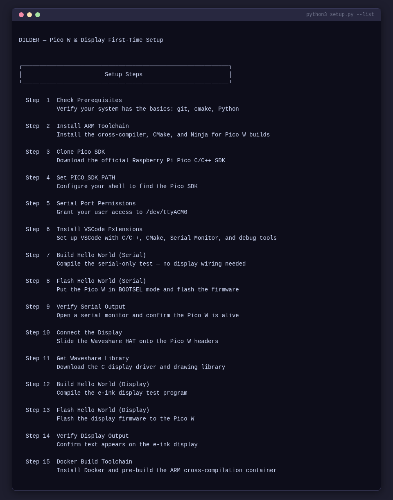
The script handles 15 steps across three checkpoints:
| Step | Name | Description |
|---|---|---|
| 1 | Check Prerequisites | Detects distro, verifies git/cmake/Python/Tkinter/pyserial |
| 2 | Install ARM Toolchain | Runs the correct package manager command |
| 3 | Clone Pico SDK | Clones pico-sdk with submodules |
| 4 | Set PICO_SDK_PATH | Adds export to your shell profile |
| 5 | Serial Port Permissions | Adds user to uucp (Arch) or dialout (Debian) |
| 6 | Install VSCode Extensions | Installs C/C++ (or clangd for Code OSS), CMake Tools, Cortex-Debug |
| 7 | Build Hello Serial | CMake + Ninja build of serial-only test |
| 8 | Flash Hello Serial | Guides BOOTSEL, auto-detects mount, copies UF2 |
| 9 | Verify Serial Output | Confirms serial and LED work (Checkpoint 1) |
| 10 | Connect the Display | Guides HAT-on-header assembly |
| 11 | Get Waveshare Library | Clones and copies C driver files |
| 12 | Build Hello Display | Builds the e-ink display test |
| 13 | Flash Hello Display | Flash display firmware |
| 14 | Verify Display Output | Confirms text on display (Checkpoint 2) |
| 15 | Docker Build Toolchain | Installs Docker and pre-builds the ARM container (Checkpoint 3) |
Use --status to check your current environment at a glance:
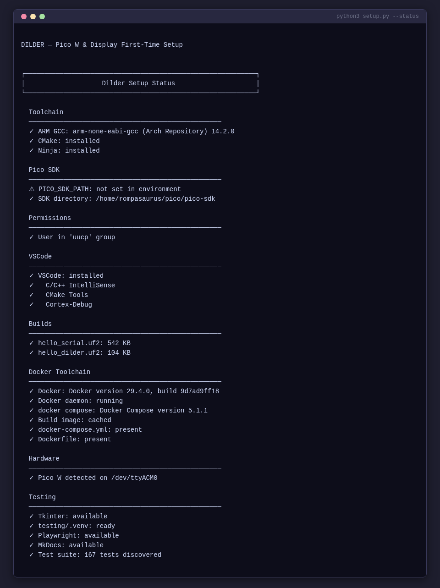
Table of Contents (Manual Guide)¶
- What You Need
- Understanding the Hardware
- Install the Pico C/C++ SDK Toolchain
- Set Up the Docker Build Environment (Optional)
- Configure VSCode for Pico Development
- Checkpoint 1 — Hello World Serial (No Wiring Needed)
- Connect the Display to the Pico W
- Checkpoint 2 — Hello World e-Ink Display
- Debugging
- Troubleshooting
- Next Steps
1. What You Need¶
Hardware¶
| Item | Notes |
|---|---|
| Raspberry Pi Pico W | With male headers soldered on |
| Waveshare 2.13" e-Paper HAT V3 | SSD1680 driver — check the PCB silkscreen on the back |
| Micro-USB data cable | Must be a data cable, not charge-only — this is the #1 gotcha |
| Linux PC | Arch/CachyOS, Ubuntu, Debian, or Fedora |
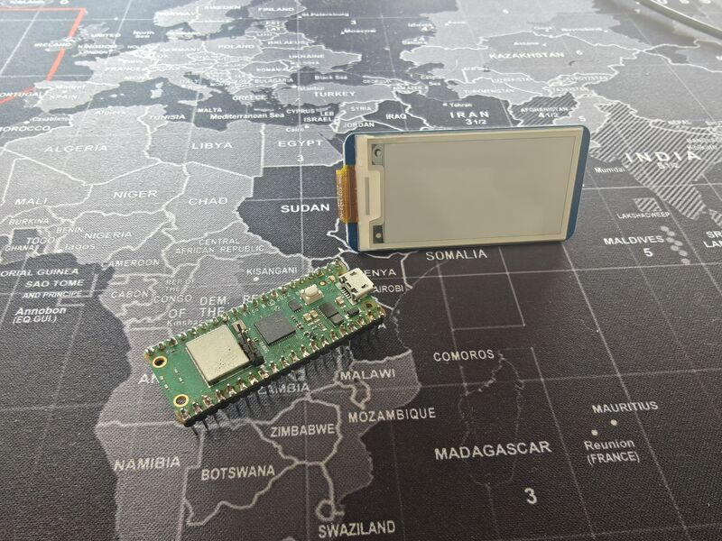
No breadboard or jumper wires needed
The Waveshare HAT has a female header socket that slides directly onto the Pico W's male header pins. No breadboard, no jumper wires — just push it on.
Software (installed in this guide)¶
| Tool | Purpose |
|---|---|
arm-none-eabi-gcc |
ARM cross-compiler for the RP2040 |
cmake + ninja |
Build system used by the Pico SDK |
pico-sdk |
Official Raspberry Pi Pico C/C++ SDK |
picotool |
CLI utility for flashing and inspecting Pico boards |
| VSCode | Editor and IDE |
| CMake Tools extension | CMake integration for VSCode |
| Serial Monitor extension | View USB serial output from the Pico W |
| Cortex-Debug extension | On-chip debugging via SWD (optional) |
2. Understanding the Hardware¶
The Pico W at a Glance¶
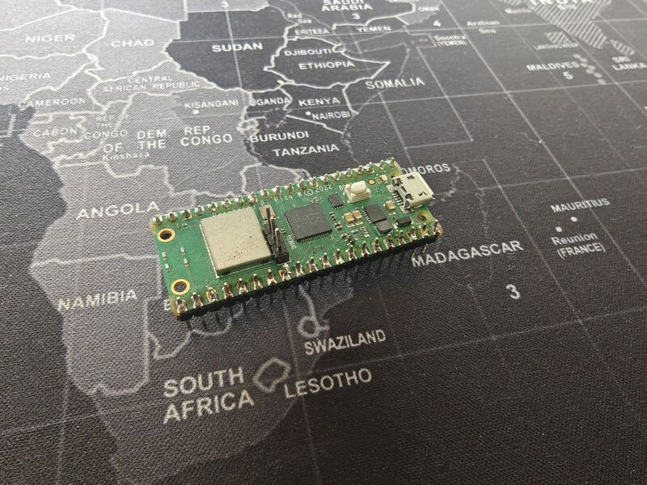
- Chip: RP2040 — dual-core ARM Cortex-M0+ at 133 MHz
- RAM: 264 KB SRAM
- Flash: 2 MB onboard QSPI
- GPIO: 26 multi-function pins (3.3V logic — NOT 5V tolerant)
- USB: Micro-USB 1.1 — used for flashing and serial output
- Wi-Fi: 802.11n 2.4 GHz (Infineon CYW43439)
The Waveshare 2.13" e-Paper V3 at a Glance¶
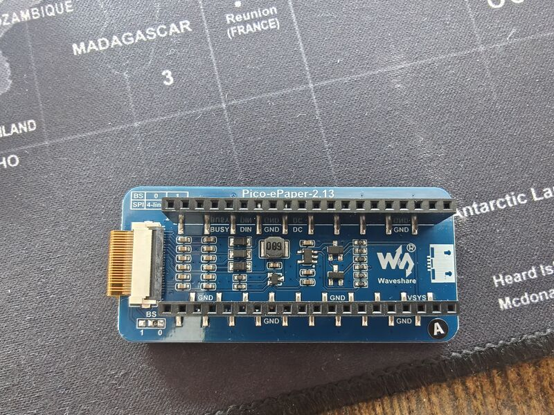
- Resolution: 250 x 122 pixels, black and white
- Driver IC: SSD1680
- Interface: SPI (4-wire, Mode 0)
- Refresh: Full refresh ~2 sec, partial ~0.3 sec
- Minimum refresh interval: 180 seconds between operations
- Standby current: < 0.01 uA (practically zero)
How They Talk to Each Other¶
The display communicates over SPI (Serial Peripheral Interface). The Pico W has two SPI controllers (SPI0 and SPI1). We use SPI1 for the display, leaving SPI0 free for future peripherals.
The display needs 8 connections total: power (VCC + GND), four SPI signals (MOSI, CLK, CS, DC), a reset line, and a busy flag.
Why C Instead of MicroPython¶
| C (Pico SDK) | MicroPython | |
|---|---|---|
| Speed | Native machine code, 133 MHz both cores | Interpreted, ~100x slower for compute |
| Flash usage | Your code only | ~700 KB for the interpreter alone |
| RAM | Full 264 KB available | ~180 KB after interpreter overhead |
| Timing | Deterministic, microsecond precision | GC pauses, non-deterministic |
| Debugging | SWD breakpoints, printf, full GDB | REPL print statements only |
| Libraries | Pico SDK, direct register access | Limited to what's been ported |
For a real-time pet with animations, input handling, and tight display refresh timing, C is the right choice.
3. Install the Pico C/C++ SDK Toolchain¶
The setup script automates all of this
Steps 1-6 of python3 setup.py handle the entire toolchain installation automatically with distro detection. Here's what the prerequisite check looks like:
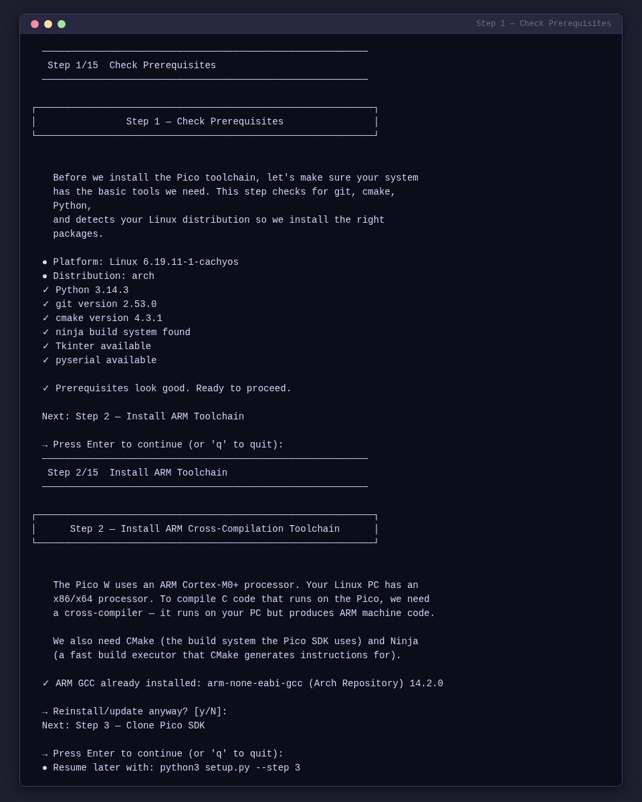
Step 3.1 — Install System Dependencies¶
Step 3.2 — Verify the Cross-Compiler¶
You should see output like:
If this fails, the toolchain is not installed correctly. Do not proceed until this works.
Step 3.3 — Clone the Pico SDK¶
# Create a workspace for Pico development
mkdir -p ~/pico && cd ~/pico
# Clone the SDK
git clone --recurse-submodules https://github.com/raspberrypi/pico-sdk.git
# Verify it downloaded
ls pico-sdk/
You should see directories like src/, lib/, cmake/, etc.
Step 3.4 — Set the SDK Environment Variable¶
Add this to your shell profile:
# For zsh (~/.zshrc)
echo 'export PICO_SDK_PATH="$HOME/pico/pico-sdk"' >> ~/.zshrc
source ~/.zshrc
# For bash (~/.bashrc)
echo 'export PICO_SDK_PATH="$HOME/pico/pico-sdk"' >> ~/.bashrc
source ~/.bashrc
Verify:
Step 3.5 — Install picotool (Optional but Recommended)¶
Step 3.6 — Serial Port Permissions¶
The group name depends on your distro:
Log out required
You must log out and back in (or reboot) for this to take effect. A new terminal window is not enough.
Verify after logging back in:
4. Set Up the Docker Build Environment (Optional)¶
The setup script automates Docker installation
Step 15 of python3 setup.py handles Docker install, daemon setup, group permissions, and image pre-build:
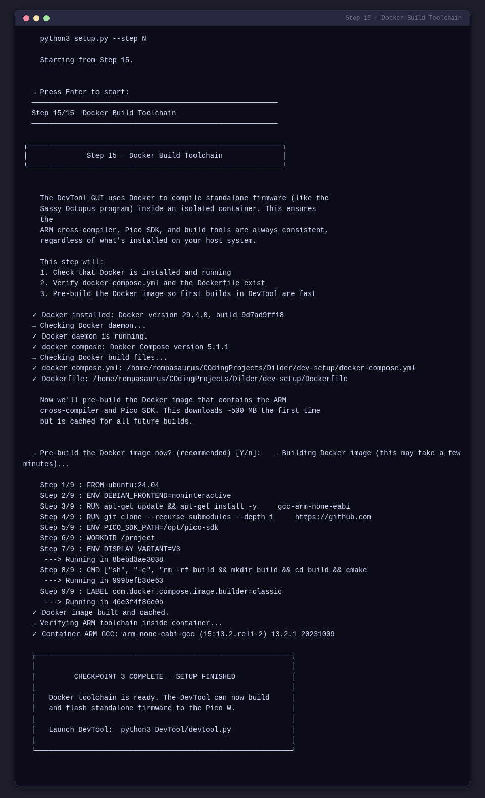
If you prefer a containerized build environment for reproducibility, use the provided Docker setup in dev-setup/.
Then build:
5. Configure VSCode for Pico Development¶
Step 5.1 — Install VSCode¶
Step 5.2 — Install Required Extensions¶
code --install-extension ms-vscode.cpptools
code --install-extension ms-vscode.cmake-tools
code --install-extension twxs.cmake
code --install-extension ms-vscode.vscode-serial-monitor
code --install-extension marus25.cortex-debug
| Extension | Purpose |
|---|---|
| C/C++ | IntelliSense, syntax highlighting, debugging |
| CMake Tools | CMake project management, build, configure |
| CMake | CMake syntax highlighting |
| Serial Monitor | View serial output from the Pico W |
| Cortex-Debug | ARM Cortex debugging via SWD (optional) |
Step 5.3 — Configure CMake Tools¶
Create .vscode/settings.json:
{
"cmake.generator": "Ninja",
"cmake.configureSettings": {
"PICO_SDK_PATH": "${env:PICO_SDK_PATH}",
"PICO_BOARD": "pico_w"
},
"cmake.sourceDirectory": "${workspaceFolder}/dev-setup/hello-world-serial",
"cmake.buildDirectory": "${workspaceFolder}/dev-setup/hello-world-serial/build",
"C_Cpp.default.configurationProvider": "ms-vscode.cmake-tools",
"files.associations": { "*.h": "c", "*.c": "c" }
}
Create .vscode/cmake-kits.json:
[
{
"name": "Pico W ARM GCC",
"compilers": {
"C": "/usr/bin/arm-none-eabi-gcc",
"CXX": "/usr/bin/arm-none-eabi-g++"
},
"isTrusted": true
}
]
Create .vscode/c_cpp_properties.json:
{
"configurations": [
{
"name": "Pico W",
"includePath": [
"${workspaceFolder}/dev-setup/**",
"${env:PICO_SDK_PATH}/src/**"
],
"defines": ["PICO_BOARD=pico_w", "LIB_PICO_STDIO_USB"],
"compilerPath": "/usr/bin/arm-none-eabi-gcc",
"cStandard": "c11",
"intelliSenseMode": "gcc-arm"
}
],
"version": 4
}
Select the build kit: Ctrl+Shift+P > "CMake: Select a Kit" > "Pico W ARM GCC"
6. Checkpoint 1 — Hello World Serial (No Wiring Needed)¶
Goal: Verify the entire toolchain before touching the display. Just the Pico W plugged into USB.
The setup script handles build + flash + verify
Steps 7-9 of python3 setup.py automate the build, flash (with BOOTSEL detection), and serial verification:
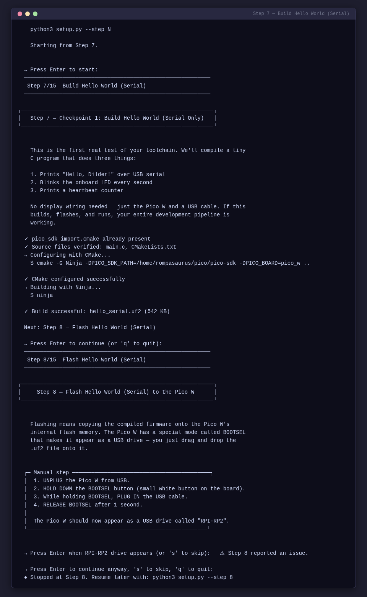
Build¶
cp $PICO_SDK_PATH/external/pico_sdk_import.cmake \
dev-setup/hello-world-serial/
cd dev-setup/hello-world-serial
mkdir -p build && cd build
cmake -G Ninja -DPICO_SDK_PATH=$PICO_SDK_PATH -DPICO_BOARD=pico_w ..
ninja
Flash¶
- Unplug the Pico W.
- Hold BOOTSEL, plug in USB, release after 1 second.
- Copy:
cp build/hello_serial.uf2 /run/media/$USER/RPI-RP2/
Verify¶
Open serial monitor: Ctrl+Shift+P > "Serial Monitor" > port /dev/ttyACM0 > baud 115200
=========================
Hello, Dilder!
Pico W is alive.
=========================
Heartbeat #1 | LED: ON
Heartbeat #2 | LED: OFF
...
The onboard LED should blink every second. If this works, your entire toolchain is verified.
7. Connect the Display to the Pico W¶
The setup script shows detailed connection instructions
Step 10 of python3 setup.py provides a guided walkthrough with ASCII diagrams:
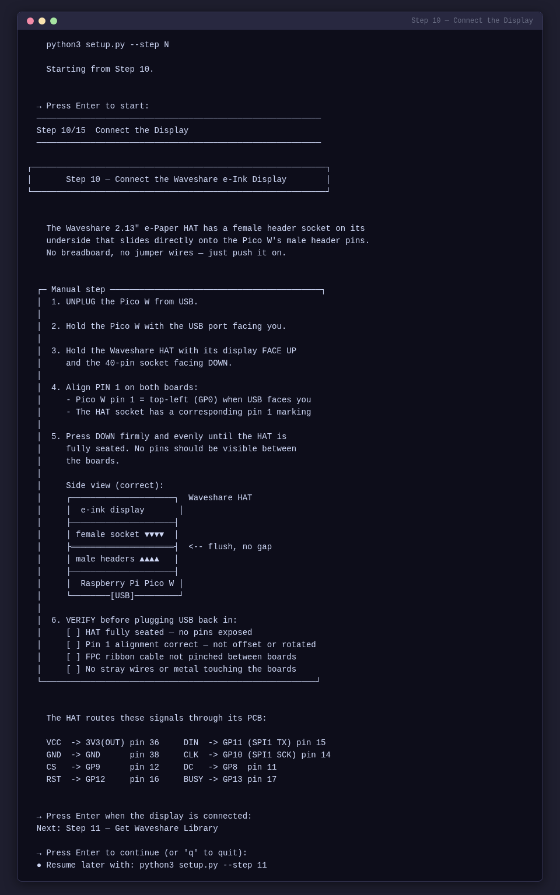
Power off before connecting
Disconnect the Pico W from USB before attaching the display. Voltage spikes can damage the e-ink panel.
Direct Header Connection¶
The Pico W has male header pins soldered on. The Waveshare HAT has a female header socket on its underside. The display slides directly onto the Pico W's headers — no breadboard or jumper wires required.
Step 7.1 — Align the Headers¶
- Hold the Pico W with the USB port facing you.
- Hold the Waveshare HAT with its display face up and the 40-pin socket facing down.
- Align pin 1 on both boards. Pin 1 on the Pico W is the top-left pin (GP0) when the USB port faces you. The HAT's socket has a corresponding pin 1 marking.
- The HAT's header socket covers pins 1-40 of the Pico W.
Step 7.2 — Seat the Display¶
- Line up all pins carefully — do not force it at an angle.
- Press down firmly and evenly until the HAT is fully seated on the Pico W headers.
- The HAT should sit snug with no pins visible between the boards.
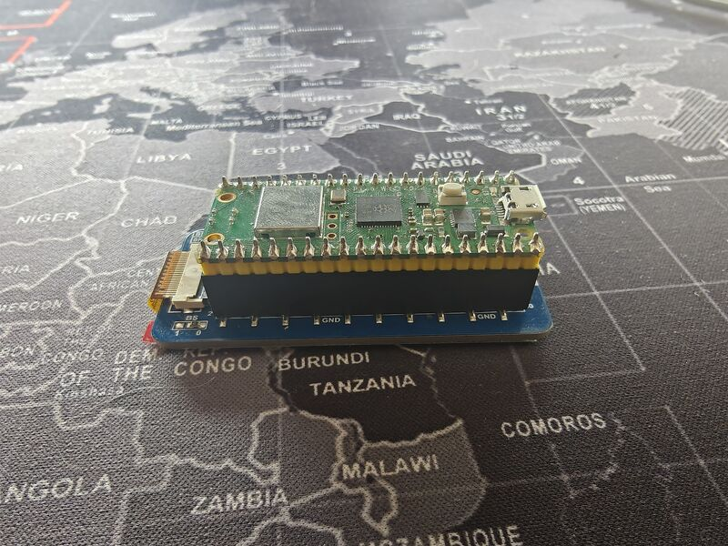
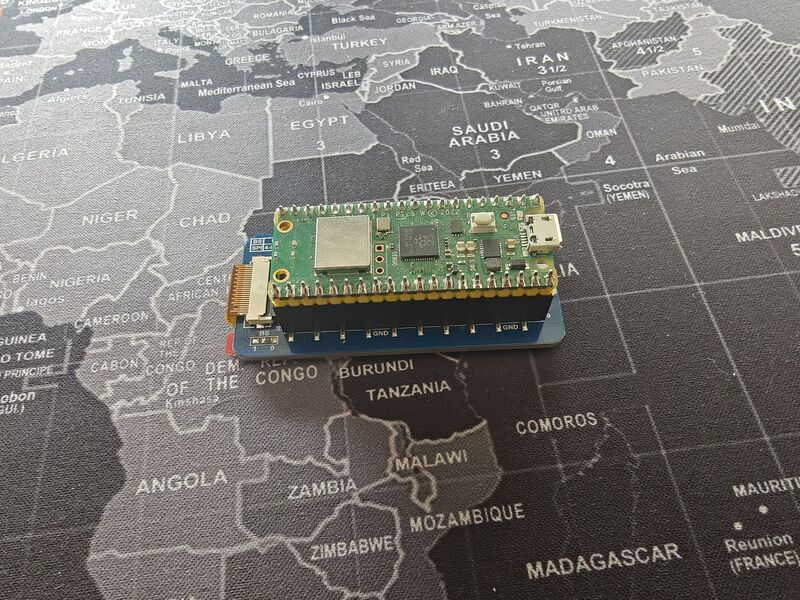
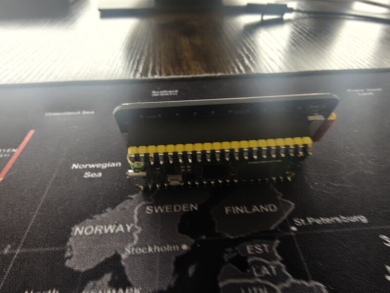
Step 7.3 — Verify the Connection¶
Before plugging in USB, check:
- [ ] The HAT is fully seated — no pins are exposed between the boards.
- [ ] Pin 1 alignment is correct — the HAT is not offset or rotated.
- [ ] The display's FPC ribbon cable is not pinched between the boards.
- [ ] Nothing is shorting — no stray wires or metal touching the boards.
Pin Mapping (for reference)¶
The HAT uses these Pico W pins through the direct header connection:
| e-Paper Signal | Function | Pico W GPIO | Pico W Pin # |
|---|---|---|---|
| VCC | 3.3V power | 3V3(OUT) | 36 |
| GND | Ground | GND | 38 |
| DIN | SPI MOSI | GP11 (SPI1 TX) | 15 |
| CLK | SPI clock | GP10 (SPI1 SCK) | 14 |
| CS | Chip select | GP9 (SPI1 CSn) | 12 |
| DC | Data/Command | GP8 | 11 |
| RST | Reset | GP12 | 16 |
| BUSY | Busy flag | GP13 | 17 |
These are the same pins used in the Waveshare Pico examples. The HAT routes them through its PCB from the 40-pin socket.
8. Checkpoint 2 — Hello World e-Ink Display¶
Goal: Draw text on the e-ink display using the Waveshare C library.
The setup script automates the library download, build, and flash
Steps 11-14 of python3 setup.py handle everything:
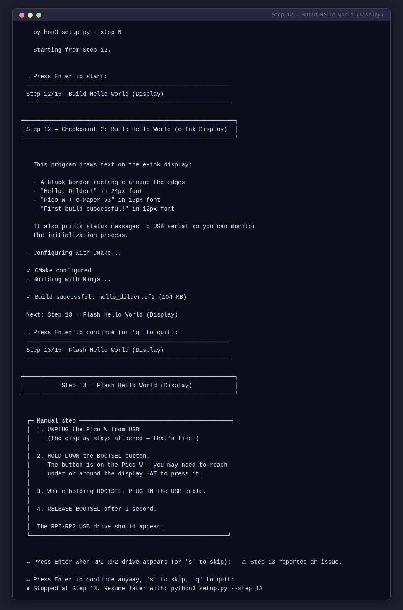
Get the Waveshare C Library¶
cd /tmp && git clone https://github.com/waveshare/Pico_ePaper_Code.git
cd ~/CodingProjects/Dilder/dev-setup/hello-world
mkdir -p lib/Config lib/e-Paper lib/GUI lib/Fonts
cp /tmp/Pico_ePaper_Code/c/lib/Config/DEV_Config.{h,c} lib/Config/
cp /tmp/Pico_ePaper_Code/c/lib/Config/Debug.h lib/Config/
cp /tmp/Pico_ePaper_Code/c/lib/e-Paper/EPD_2in13_V3.{h,c} lib/e-Paper/
cp /tmp/Pico_ePaper_Code/c/lib/GUI/GUI_Paint.{h,c} lib/GUI/
cp /tmp/Pico_ePaper_Code/c/lib/Fonts/fonts.h lib/Fonts/
cp /tmp/Pico_ePaper_Code/c/lib/Fonts/font{8,12,16,20,24}.c lib/Fonts/
cp $PICO_SDK_PATH/external/pico_sdk_import.cmake .
rm -rf /tmp/Pico_ePaper_Code
Build¶
mkdir -p build && cd build
cmake -G Ninja -DPICO_SDK_PATH=$PICO_SDK_PATH -DPICO_BOARD=pico_w ..
ninja
Flash¶
- Unplug, hold BOOTSEL, plug in, release.
cp build/hello_dilder.uf2 /run/media/$USER/RPI-RP2/
Verify¶
Serial output:
Hello, Dilder!
Initializing e-Paper display...
Display initialized.
Drawing to display...
Display updated. Entering sleep mode.
Heartbeat: 1
The display should show:
- A black border rectangle
- "Hello, Dilder!" in 24px font
- "Pico W + e-Paper V3" in 16px font
- "First build successful!" in 12px font
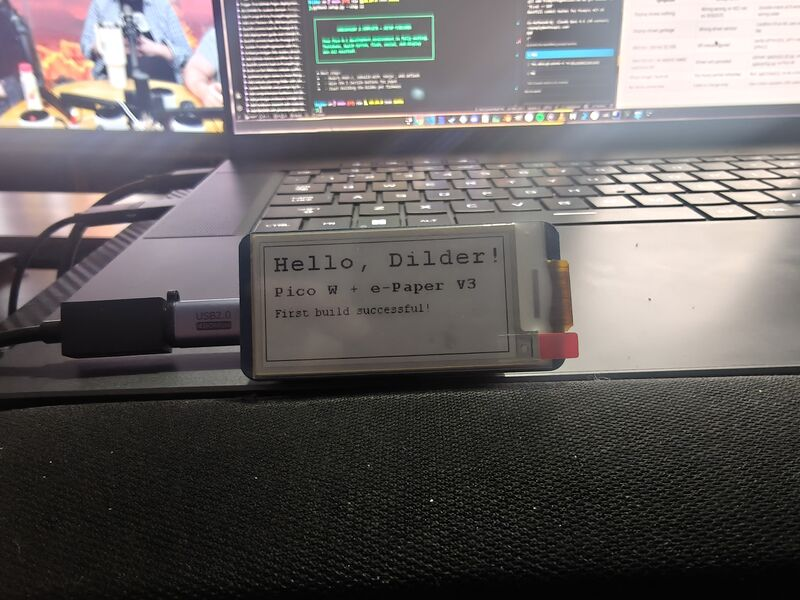
If text appears on the display — the full hardware stack is working.
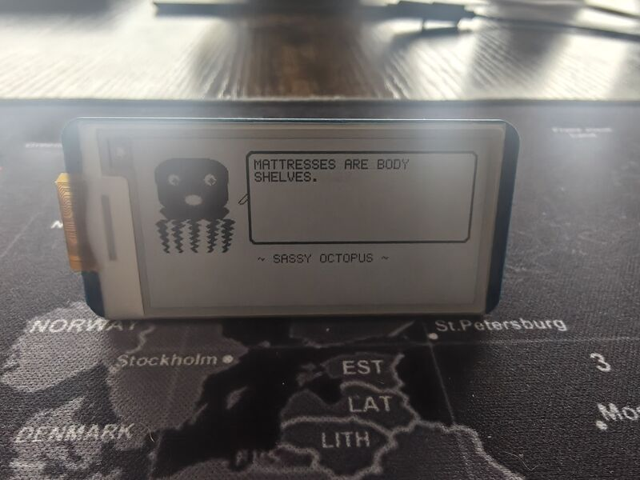
9. Debugging¶
Printf Debugging (USB Serial)¶
Add printf() anywhere — output appears on the serial monitor at 115200 baud.
Hardware Debugging with SWD (Advanced)¶
For breakpoint debugging, you need a second Pico as a debug probe. See the full guide in dev-setup/ for SWD wiring and configuration.
10. Troubleshooting¶
| Problem | Solution |
|---|---|
arm-none-eabi-gcc: command not found |
Toolchain not installed — re-run Step 3.1 |
PICO_SDK_PATH is not defined |
Set the env var (Step 3.4), restart terminal |
| RPI-RP2 drive doesn't appear | Hold BOOTSEL before plugging in. Try a different cable |
/dev/ttyACM0 doesn't exist |
Wrong cable (charge-only), or firmware crashed |
| Permission denied on serial | Add to serial group: uucp on Arch/CachyOS, dialout on Ubuntu/Debian, then log out and back in |
| Serial shows nothing | Baud rate must be 115200 |
| Display blank | Check HAT is fully seated on headers, pin 1 aligned |
| Garbage pixels | Wrong driver version — confirm V3 on PCB silkscreen |
| Display flickers then blank | HAT not seated properly — reseat it firmly |
| Old image stuck | E-ink retains last image — flash code that calls EPD_2in13_V3_Clear() |
11. Next Steps¶
- Modify the text — Change strings in
main.c, rebuild, flash. - Add button input — Wire the 5 tactile buttons (see Wiring & Pinout).
- Draw graphics —
GUI_Paintsupports lines, rectangles, circles, bitmaps. - Try partial refresh —
EPD_2in13_V3_Display_Partial()for fast updates. - Build the firmware scaffold — Start the Dilder pet logic.